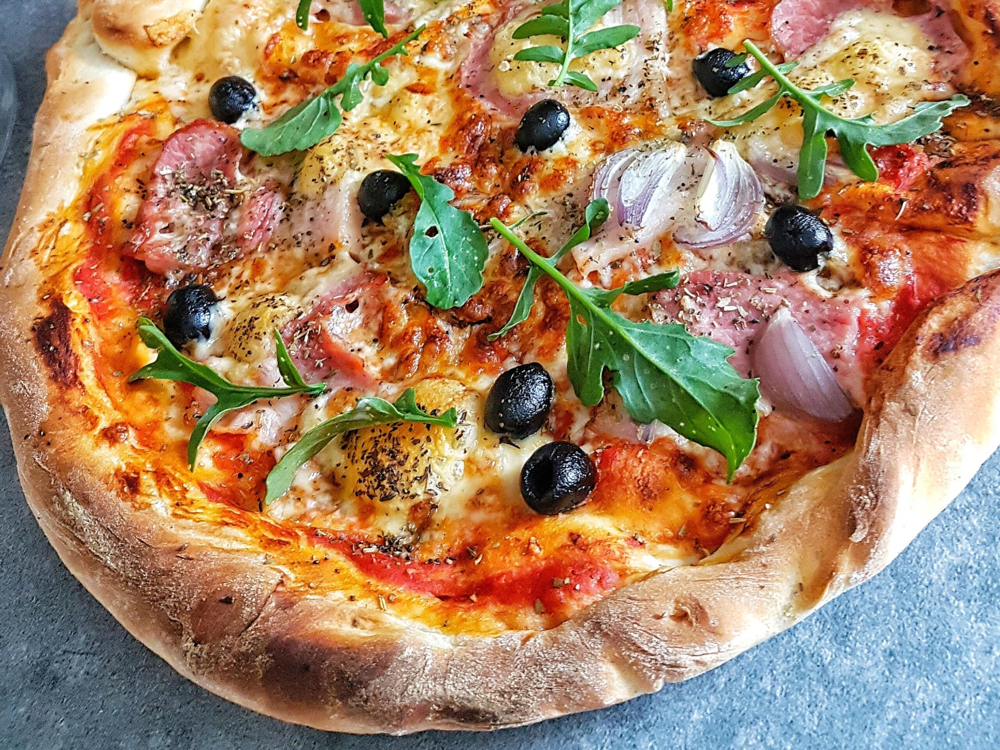

Przepis na pizze

Składniki
1 i 1/2 szklanki mąki
1/2 szklanki mleka
10 g drożdży
2 łyżki oliwy z oliwek
1/2 łyżeczki cukru
1/2 łyżeczki soli
250 ml passaty pomidorowej
przyprawy: oregano, czosnek, sól pieprz
Przepis
Wymieszaj drożdże z cukrem i ciepłym mlekiem aż do rozpuszczenia.
Dodaj mąkę i szczyptę soli.
Na koniec dodaj 2 łyżki oliwy i starannie wyrób ciasto.
Rozwałkuj i pozostaw do wyrośnięcia na około godzinę.
Delikanie rozprowadź pasatę z przyprawami oraz dodaj ulubione składniki.
Posyp wszystko tartym serem.
Piecz w pieklarniku ok 10min, nagrzanym do 250 stopnii.
SMACZNEGO!!!